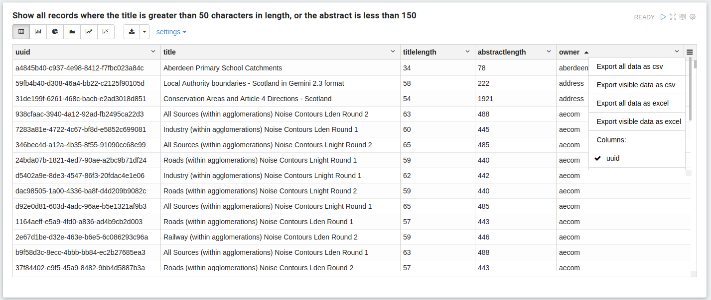

Improving Dataset Quality through Metadata
Jo Cook | Astun Technology
Who we are
We manage and host the SSDI
Sit on IST36
Chair the UK Gemini WG
GeoNetwork PSC
Background
Increasing focus on Data Quality across the Public Sector
Best Practice
There are plenty of frameworks and guidance that talk about Quality Dimensions, and the Data Lifecycle
Making Data FAIR
Data and Metadata Quality both contribute to Data Discovery and the FAIR principles

But...
There's little technical guidance on how to apply this in real life
Some Practical Approaches
Recent innovations to make it easier
The Gemini 2.3 plugin
Easier to use
Easier to see guidance
Better machine-readable output
Data Quality and Lineage
Snippets
Drop-down pick lists
Visual changes for ambiguous elements
Dashboards
SEO
Data Quality
Visual changes for ambiguous elements
Best Practice
Geospatial Commission Best Practice Guides state that data should be Findable, Accessible, Interoperable, and Reusable (FAIR)
Recommendations
Data sharing is good (obvs) but most searches come from search engines, not direct searches in portals
To help people find things we need to treat data and metadata as web content and employ search-engine optimisation (SEO) techniques
We need to use structured data to help search engines provide a richer view of our content
SEO is about making sure search engines display our content as high up in search results as possible
We do this by ensuring that we don't have any data quality issues that might cause down-ranking
Data quality reports in zeppelin analytics
Structured data is the fun part!
By mapping terms in our content to schema.org types we tell google what our page is about
which in turn helps it decide how to display the result
We can also use web analytics to provide insight on how people are using our data and our portals
providing insights into numbers of visitors, what data is being downloaded, where people are from, etc
Examples from Scottish Spatial Data Infrastructure
Metadata in GeoNetwork/Structured Data/Google Dataset Search/Twitter Card Validator/Web Console
This is not limited to metadata
Structured data could be applied to lots of our products, like spotlight or other single-use maps
Web analytics could help us and customers understand how data and pages are being used
What's in it for us?
No one else seems to be doing it!
It's very topical
It adds value to our offering
It's a relatively quick win!
Thank You!

Improving Dataset Quality through Metadata